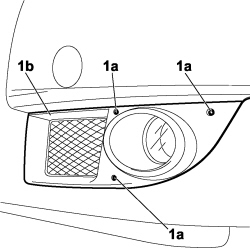
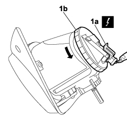
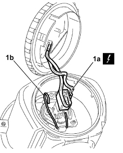
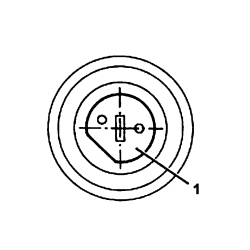

5540D14 L/H OR R/H FOG LIGHT BULB (ONE) - R+R
- Path
- Procedures > 55 ELECTRICAL EQUIPMENT > 5540 EXTERIOR LIGHTING > 5540D FOG LIGHTS > 5540D14 L/H OR R/H FOG LIGHT BULB (ONE) - R+R
- Kind
- repair procedure (removal / refitting; the operation number is the code)
- Applies to
- engines: 1.4 8v, 1.6 16v, 1.3 JTD 16V, 1.9 JTD 8V; all production periods
- Interactive page
- https://sloeber94.github.io/elrnDB-fDbl/en/#/223000170
Applies to: engines: 1.4 8v, 1.6 16v, 1.3 JTD 16V, 1.9 JTD 8V; production: da 12/03; only with equipment: MY 2005
 Removing
Removing
 Refitting
Refitting- Turn the ignition key to the OFF position.
- Lift the bonnet
- Disconnect the negative battery terminal.
Description | Connector | |
|---|---|---|
BATTERY |
1. Undo the fixing bolts (1a) and remove the front grille (1b) complete with fog light from its housing.

Applies to: engines: 1.4 8v, 1.6 16v, 1.3 JTD 16V, 1.9 JTD 8V; production: da 12/03; only with equipment: MY 2005
1. Disconnect the electrical connection (1a) from the fog light, rotate the protective cover (1b) in an anti-clockwise direction and remove it.
Description | Connector | |
|---|---|---|
1a | LEFT FOG LIGHT |
Description | Connector | |
|---|---|---|
1a | RIGHT FOG LIGHT |

Applies to: engines: 1.4 8v, 1.6 16v, 1.3 JTD 16V, 1.9 JTD 8V; production: da 12/03; only with equipment: MY 2005
1. Disconnect the electrical connection (1a) from the bulb holder, releasethe retaining clip (1b), extract the bulb holder complete with bulb and then remove the bulb.

Applies to: engines: 1.4 8v, 1.6 16v, 1.3 JTD 16V, 1.9 JTD 8V; production: da 12/03; only with equipment: MY 2005
Applies to: engines: 1.4 8v, 1.6 16v, 1.3 JTD 16V, 1.9 JTD 8V; production: da 12/03; only with equipment: MY 2005
Refitting
Removing- Check the condition of the bulb and make sure it is clean; if necessary, replace it with a new one.
- Fit the bulb in the bulb holder.
1. Fit the bulb holder correctly in its housing.

Applies to: engines: 1.4 8v, 1.6 16v, 1.3 JTD 16V, 1.9 JTD 8V; production: da 12/03; only with equipment: MY 2005
- Attach the retaining clip.
- Position the protective cover rotating it in a clockwise direction.
- Connect the electrical connection to the fog light.
Description | Connector | |
|---|---|---|
LEFT FOG LIGHT |
Description | Connector | |
|---|---|---|
RIGHT FOG LIGHT |
- Place the left front grille in position complete with fog light and secure it to the front bumper tightening the fixing bolts.
- Connect the negative battery terminal.
Description | Connector | |
|---|---|---|
BATTERY |
- Check that the bulb is working.